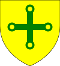

| Name | Prt. | CoA | Lifespan | Notes |
| Idonea |
 |
 |
1284–1343
Aged 59 |
Married Osmond Tadcaster in 1297
- Gunnora (1307–1353)
- Osmond (1313–1364)
- Osanna (1314–1363)
- Wymon (1316–1384)
- Clarica (1324–1375)
|
| Clarica |
 |
|
1286–1337
Aged 51 |
Married Philip Ashby in 1301
- Edith (1305–1364)
- Clarica (1311–1358)
- Stephen (1313–1368)
- Osanna (1314–1369)
- Mabel (1315–1318)
- Gunnora (1325–1338)
- Philip (1331–1388)
|
| Gunnora |
|
|
1287–1299
Aged 12 |
|
| Estrild |
 |
 |
1288–1338
Aged 50 |
Married Nicholas Wadhurst in 1301
|
| Osbert VI |
 |
|
1289–1342
Aged 53 |
Wives:- Clarica Bognor (m. 1313 d. 1324)
- Idonea (1317–1367)
- Osbert (1321–1337)
- Clarica (1323–1330)
- Osanna Bognor (m. 1324 d. 1342)
- Gunnora (1327–1328)
- Stephen III (1328–1381)
- Solomon (1328–1386)
- Clarica (1330–1350)
- Gunnora (1331–1332)
- Seeman (1332–1339)
- Warin (1335–1374)
- Gunnora (1336–1344)
- Estrild (1337–1339)
- Osbert (1338–1393)
- Elias (1342–1401)
|
| Stephen |
|
|
1293–1297
Aged 4 |
|
| Sibyl |
|
|
1295–1316
Aged 21 |
Married Fulke Higham in 1308
|
| Stephen |
|
|
1298–1300
Aged 2 |
|
| Gunnora |
 |
|
1300–1320
Aged 20 |
Married Fulke Higham in 1316
|
| Godeleva |
|
|
1302–1304
Aged 2 |
|
| Godeleva |
|
|
1306–1355
Aged 49 |
Husbands:- Martin Padstow (m. 1319 d. 1335)
- Edith (1331–1383)
- Osmond (1333)
- Martin (1335–1388)
- Clarica (1336)
- Nicholas Wadhurst (m. 1338 d. 1348)
- Godeleva (1344–1398)
- Nicholas (1345–1395)
- Michael (1346–1369)
|